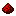

30.07.2025
Кузнечные шаблоны:
Обновление отделки  Хранитель:
Хранитель:
- Редстоун — увеличение урона на 1 в биоме тёмных глубин или прилив здоровья 1 вне биома;
 Алмаз — сила 1 в
биоме тёмных глубин или
сопротивление 1
вне биома; всегда даёт замедление 1;
Алмаз — сила 1 в
биоме тёмных глубин или
сопротивление 1
вне биома; всегда даёт замедление 1;
 Незерит — совокупность эффектов от редстоуна и алмаза.
Незерит — совокупность эффектов от редстоуна и алмаза.
Крафты:
Изменён крафт магнетита: теперь вместо незеритового слитка используется железный.